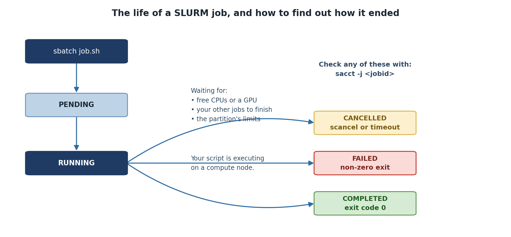

Introduction to SLURM
Last updated on 2026-08-27 | Edit this page
Estimated time: 20 minutes
Overview
Questions
- What is a job scheduler and why do we need one?
- What is SLURM?
- Why can’t I just run jobs on the head node?
Objectives
- Understand the purpose of job schedulers in shared computing environments
- Learn the basic architecture of Sagehen HPC
- Distinguish between head nodes and compute nodes
- Understand the SLURM job lifecycle
What is a Job Scheduler?
When multiple researchers share a computing cluster, a job scheduler coordinates access:
- Manages resources – tracks CPU, memory, and GPU availability
- Queues jobs – accepts requests and holds them until resources are free
- Allocates resources – assigns specific compute nodes to jobs
- Ensures fairness – prevents any one user from monopolizing the cluster
- Enforces policies – implements time limits, quotas, and priority rules
Without a scheduler, researchers would need to manually coordinate who runs what and when.
SLURM: Simple Linux Utility for Resource Management
SLURM is the job scheduler used on Sagehen. It is one of the most widely deployed schedulers in HPC, running on thousands of clusters worldwide.
The Sagehen HPC Cluster Architecture
Head Node
- Address: sagehen.hpc.pomona.edu
- CPU: 2 threads; RAM: 8 GB
- Purpose: Login, submit jobs, manage files
![Diagram of Sagehen HPC. Your laptop connects by SSH to the head node at sagehen.hpc.pomona.edu, which is for login and job submission only. From there SLURM dispatches work to three partitions: amd, the default, with 12 nodes a001 to a012 of 128 cores and 500 GB each and up to 720 hours; gpu, with 10 GPUs in total made up of four A100 80GB, four L40S 48GB and two RTX PRO 6000 96GB; and short, which shares the amd nodes, is capped at 2 hours and starts almost immediately. Below, shared storage visible from every node: /rhome with 100 GB per user backed up, /bigdata/lab per lab with 1 TB backed up, and /scratch node-local SSD deleted at job end.](../fig/02-cluster-architecture.png)
The Head Node is Sacred
The head node has only 2 CPU threads and 8 GB of RAM. Running compute jobs there will crash the login server, kill other users’ jobs, and result in account restrictions. Always submit jobs to compute nodes via SLURM.
Compute Nodes
| Partition | Specs | Max Time | Best For |
|---|---|---|---|
| amd | See sinfo -p amd for current configuration |
30 days | General compute |
| gpu | 10 GPUs across multiple nodes (4× A100, 4× L40S, 2× RTX PRO 6000; see Workshop 16) | 30 days | ML, GPU-accelerated work |
| short | See sinfo -p short for current configuration |
Shorter max walltime than amd/gpu | Quick test jobs, debugging, rapid prototyping |

The SLURM Job Lifecycle
-
Submission: You run
sbatch(batch) orsrun(interactive) on the head node - Queue: SLURM accepts your job and places it in a queue
- Waiting: SLURM waits for available resources and priority scheduling
- Allocation: SLURM assigns specific compute nodes
- Execution: Your job runs on those nodes
- Completion: Output is written to files; nodes are freed
SLURM Command Overview
| Command | Purpose |
|---|---|
srun |
Start an interactive job |
sbatch |
Submit a batch script |
squeue |
View jobs in the queue |
scancel |
Cancel a job |
sacct |
View job history |
seff |
Analyze job efficiency |
sinfo |
View cluster status |
Challenge 1: Exploring Sagehen HPC
You should see sagehen from hostname,
2 from nproc, and ~8 GB from
free -h. The sinfo output shows the
amd, gpu, and short partitions
with their node counts and time limits.
- A job scheduler coordinates resource sharing on a cluster
- SLURM is the job scheduler on Sagehen
- The head node (2 CPUs, 8 GB RAM) is for login and job submission only
- Jobs run on compute nodes in three partitions:
amd(general compute),gpu(GPU-accelerated), andshort(quick test/debug jobs) - SLURM enforces fair access through queuing, resource limits, and priorities